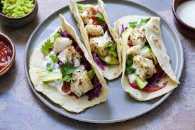
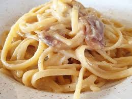
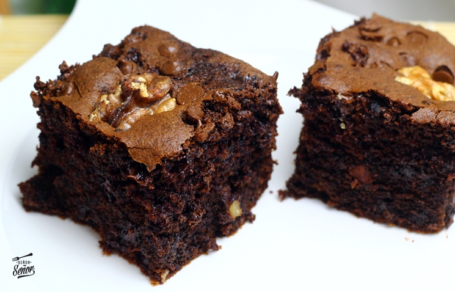
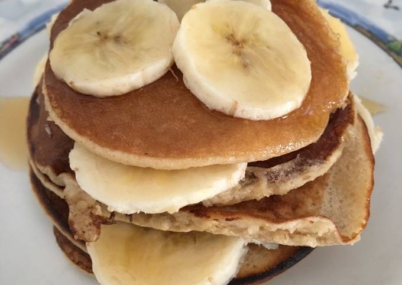

Recetas Bootstrap
Ensalada César

Ingredientes:
- 1 lechuga romana
- 1 pechuga de pollo a la parrilla, en tiras
- Crutones
- Queso parmesano rallado
- Aderezo César
Instrucciones:
- Lava y corta la lechuga en trozos grandes.
- En un bol grande, mezcla la lechuga con el pollo a la parrilla.
- Añade los crutones y el queso parmesano.
- Sirve inmediatamente.
Tacos de Pescado

Ingredientes:
- 500 g de filetes de pescado (tilapia o
bacalao)
- 1 taza de harina
- 1 huevo
- 1 taza de pan rallado
- Aceite para freír
- 12 tortillas de maíz
- Col rallada
- Limón
- Salsa al gusto
Instrucciones:
- En un bol, mezcla la harina con el huevo para hacer una masa ligera.
- Pasa los filetes de pescado por la masa y luego por el pan rallado.
- Fríe los filetes en aceite caliente hasta que estén dorados y
crujientes.
- Escurre el exceso de aceite en papel absorbente.
- Calienta las tortillas en un comal o sartén.
- Arma los tacos colocando pescado en las tortillas, añade col
rallada, un
chorrito de limón y salsa al gusto.
- Sirve caliente.
Pasta Carbonara

Ingredientes:
- 250 g de pasta (espaguetis o fettuccine)
- 150 g de panceta o tocino, en trozos
- 2 huevos
- 1 taza de queso parmesano rallado
- 2 dientes de ajo, picados
- Sal y pimienta al gusto
- Aceite de oliva
Instrucciones:
- Cocina la pasta según las instrucciones del paquete. Reserva.
- En una sartén grande, calienta un poco de aceite de oliva y cocina
la
panceta hasta que esté crujiente.
- Agrega el ajo y cocina por 1 minuto más.
- En un bol, bate los huevos y mezcla con el queso parmesano.
- Escurre la pasta y añádela a la sartén con la panceta. Mezcla bien.
- Retira la sartén del fuego y añade la mezcla de huevos y queso,
removiendo rápidamente para que la salsa se espese sin que los huevos se coagulen.
- Sazona con sal y pimienta al gusto. Sirve caliente.
Brownies de Chocolate

Ingredientes:
- 150 g de mantequilla
- 200 g de azúcar
- 2 huevos
- 1 cucharadita de extracto de vainilla
- 100 g de cacao en polvo
- 100 g de harina
- 1/2 cucharadita de sal
- 1/2 cucharadita de polvo de hornear
- 100 g de nueces (opcional)
Instrucciones:
- Precalienta el horno a 180°C (350°F) y engrasa un molde para
hornear.
- Derrite la mantequilla en una cacerola a fuego bajo. Retira del
fuego y
mezcla el azúcar, los huevos y la vainilla.
- Mezcla el cacao, la harina, la sal y el polvo de hornear en otro
bol.
Incorpora esta mezcla a la mezcla de mantequilla y azúcar hasta que esté bien combinado.
- Si lo deseas, añade las nueces y mezcla bien.
- Vierte la mezcla en el molde engrasado y hornea durante 20-25
minutos, o
hasta que un palillo insertado en el centro salga con algunas migas húmedas.
- Deja enfriar antes de cortar en cuadrados y servir.
Pollo al Curry
Ingredientes:
- 500 g de pechugas de pollo, cortadas en
trozos
- 1 cebolla grande, picada
- 2 dientes de ajo, picados
- 1 cucharada de jengibre fresco, rallado
- 2 cucharadas de curry en polvo
- 400 ml de leche de coco
- 2 cucharadas de aceite vegetal
- Sal y pimienta al gusto
Instrucciones:
- Calienta el aceite en una sartén grande y sofríe la cebolla hasta
que esté dorada.
- Añade el ajo y el jengibre, y cocina por un minuto más.
- Incorpora el curry en polvo y mezcla bien con los ingredientes.
- Agrega los trozos de pollo y cocina hasta que estén dorados por
todos lados.
- Vierte la leche de coco y sazona con sal y pimienta al gusto.
- Deja cocinar a fuego lento durante 20 minutos, removiendo
ocasionalmente, hasta que el pollo esté bien cocido.
- Sirve caliente con arroz o pan naan.
Sopa de Tomate

Ingredientes:
- 6 tomates grandes, pelados y picados
- 1 cebolla, picada
- 2 dientes de ajo, picados
- 1 zanahoria, picada
- 750 ml de caldo de verduras
- 2 cucharadas de aceite de oliva
- Sal y pimienta al gusto
- Hojas de albahaca fresca (opcional)
Instrucciones:
- Calienta el aceite de oliva en una cacerola grande y sofríe la
cebolla y el ajo hasta que estén suaves.
- Añade la zanahoria picada y los tomates, y cocina durante 10
minutos.
- Vierte el caldo de verduras y lleva la mezcla a ebullición. Reduce
el fuego y deja cocinar a fuego lento durante 20 minutos.
- Tritura la sopa con una licuadora de mano o en una licuadora
tradicional hasta que esté suave.
- Sazona con sal y pimienta al gusto. Si lo deseas, adorna con hojas
de albahaca fresca antes de servir.
Panqueques

Ingredientes:
- 200 g de harina
- 1 cucharada de azúcar
- 2 cucharaditas de polvo de hornear
- 1/2 cucharadita de sal
- 250 ml de leche
- 2 huevos
- 2 cucharadas de mantequilla derretida
- 1 cucharadita de extracto de vainilla
Instrucciones:
- En un bol, mezcla la harina, el azúcar, el polvo de hornear y la
sal.
- En otro bol, bate los huevos y añade la leche, la mantequilla
derretida y el extracto de vainilla.
- Vierte los ingredientes líquidos en los secos y mezcla hasta obtener
una masa homogénea.
- Calienta una sartén antiadherente a fuego medio y vierte un poco de
masa en el centro.
- Cocina hasta que aparezcan burbujas en la superficie, luego voltea y
cocina por el otro lado hasta dorar.
- Sirve los panqueques con tus acompañamientos favoritos como miel,
frutas o jarabe de arce
Tacos de Carne Asada
Ingredientes:
- 500 g de carne de res (preferiblemente
arrachera), en tiras
- 2 cucharadas de jugo de limón
- 2 dientes de ajo, picados
- 1 cucharadita de comino molido
- 1 cucharadita de orégano seco
- 2 cucharadas de aceite de oliva
- Sal y pimienta al gusto
- Tortillas de maíz
- Cilantro fresco, picado
- Cebolla picada
- Salsa al gusto
- Limones para acompañar
Instrucciones:
- En un bol grande, mezcla el jugo de limón, el ajo, el comino, el
orégano, el aceite de oliva, sal y pimienta.
- Añade las tiras de carne y mezcla bien. Deja marinar en el
refrigerador por al menos 30 minutos.
- Calienta una parrilla o sartén a fuego alto y cocina la carne
marinada hasta que esté dorada y bien cocida.
- Calienta las tortillas de maíz en una sartén o directamente en la
parrilla.
- Sirve la carne en las tortillas y añade cilantro, cebolla y salsa al
gusto.
- Acompaña con limones para exprimir sobre los tacos antes de
disfrutar.